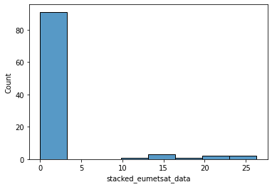

Zarr¶
Imports¶
C:\Users\Ayrto\anaconda3\envs\satip_dev\lib\site-packages\google\auth\_default.py:69: UserWarning: Your application has authenticated using end user credentials from Google Cloud SDK without a quota project. You might receive a "quota exceeded" or "API not enabled" error. We recommend you rerun `gcloud auth application-default login` and make sure a quota project is added. Or you can use service accounts instead. For more information about service accounts, see https://cloud.google.com/docs/authentication/
warnings.warn(_CLOUD_SDK_CREDENTIALS_WARNING)
Downloading: 100%|█████████████████████████████████████████████████████████████████████| 1/1 [00:00<00:00, 1.28rows/s]
import os
import dotenv
import matplotlib.pyplot as plt
import cartopy.crs as ccrs
from IPython.display import JSON
User Inputs¶
data_dir = '../data/raw'
metadata_db_fp = '../data/EUMETSAT_metadata.db'
debug_fp = '../logs/EUMETSAT_download.txt'
new_grid_fp='../data/intermediate/new_grid_4km_TM.json'
new_coords_fp = '../data/intermediate/reproj_coords_TM_4km.csv'
in_zarr_bucket = 'solar-pv-nowcasting-data/satellite/EUMETSAT/SEVIRI_RSS/OSGB36/all_zarr'
out_zarr_bucket = 'solar-pv-nowcasting-data/satellite/EUMETSAT/SEVIRI_RSS/full_extent_TM_int16'
Loading Environment Variables¶
dotenv.load_dotenv('../.env')
user_key = os.environ.get('USER_KEY')
user_secret = os.environ.get('USER_SECRET')
slack_id = os.environ.get('SLACK_ID')
slack_webhook_url = os.environ.get('SLACK_WEBHOOK_URL')
Preparing Data to Save to Zarr¶
We'll start by loading in one of the datasets we've just downloaded, in this instance we'll take the most recent one by identifying it from the metadata db.
dm = eumetsat.DownloadManager(user_key, user_secret, data_dir, metadata_db_fp, debug_fp)
df_metadata = dm.get_df_metadata()
df_metadata.tail()
2021-03-19 13:36:06,283 - INFO - ********** Download Manager Initialised **************
| ('Unnamed: 0_level_0', 'id') | ('start_date', 'Unnamed: 1_level_1') | ('end_date', 'Unnamed: 2_level_1') | ('result_time', 'Unnamed: 3_level_1') | ('platform_short_name', 'Unnamed: 4_level_1') | ('platform_orbit_type', 'Unnamed: 5_level_1') | ('instrument_name', 'Unnamed: 6_level_1') | ('sensor_op_mode', 'Unnamed: 7_level_1') | ('center_srs_name', 'Unnamed: 8_level_1') | ('center_position', 'Unnamed: 9_level_1') | ('file_name', 'Unnamed: 10_level_1') | ('file_size', 'Unnamed: 11_level_1') | ('missing_pct', 'Unnamed: 12_level_1') | ('downloaded', 'Unnamed: 13_level_1') |
|---|---|---|---|---|---|---|---|---|---|---|---|---|---|
| 22 | 2021-03-19 13:00:09.714 | 2021-03-19 13:04:16.088 | 2021-03-19 13:04:16.088 | MSG3 | GEO | SEVIRI | RSS | EPSG:4326 | 0 9.5 | MSG3-SEVI-MSG15-0100-NA-20210319130416.0880000... | 99819 | 59 | 2021-03-19 13:32:31.390670 |
| 23 | 2021-03-19 13:05:09.569 | 2021-03-19 13:09:15.943 | 2021-03-19 13:09:15.943 | MSG3 | GEO | SEVIRI | RSS | EPSG:4326 | 0 9.5 | MSG3-SEVI-MSG15-0100-NA-20210319130915.9430000... | 99819 | 0 | 2021-03-19 13:32:36.178702 |
| 24 | 2021-03-19 13:10:09.423 | 2021-03-19 13:14:15.798 | 2021-03-19 13:14:15.798 | MSG3 | GEO | SEVIRI | RSS | EPSG:4326 | 0 9.5 | MSG3-SEVI-MSG15-0100-NA-20210319131415.7980000... | 99819 | 0 | 2021-03-19 13:32:40.347753 |
| 25 | 2021-03-19 13:15:09.278 | 2021-03-19 13:19:15.652 | 2021-03-19 13:19:15.652 | MSG3 | GEO | SEVIRI | RSS | EPSG:4326 | 0 9.5 | MSG3-SEVI-MSG15-0100-NA-20210319131915.6520000... | 99819 | 62 | 2021-03-19 13:32:44.720295 |
| 26 | 2021-03-19 13:20:10.335 | 2021-03-19 13:24:16.708 | 2021-03-19 13:24:16.708 | MSG3 | GEO | SEVIRI | RSS | EPSG:4326 | 0 9.5 | MSG3-SEVI-MSG15-0100-NA-20210319132416.7080000... | 99819 | 0 | 2021-03-19 13:32:48.922629 |
We'll then load in the file
filename = df_metadata.loc[df_metadata.index[-2], 'file_name']
native_fp = f'{data_dir}/{filename}.nat'
severi_area_def = reproj.get_seviri_area_def(native_fp)
seviri_crs = severi_area_def.to_cartopy_crs()
scene = reproj.load_scene(native_fp)
scene.load(['HRV'])
/Users/laurence/conda/envs/satip_dev/lib/python3.8/site-packages/pyproj/crs/crs.py:543: UserWarning: You will likely lose important projection information when converting to a PROJ string from another format. See: https://proj.org/faq.html#what-is-the-best-format-for-describing-coordinate-reference-systems
proj_string = self.to_proj4()
/Users/laurence/conda/envs/satip_dev/lib/python3.8/site-packages/pyproj/crs/crs.py:543: UserWarning: You will likely lose important projection information when converting to a PROJ string from another format. See: https://proj.org/faq.html#what-is-the-best-format-for-describing-coordinate-reference-systems
proj_string = self.to_proj4()
And visualise it to test that everything is working
fig = plt.figure(dpi=250, figsize=(10, 10))
ax = plt.axes(projection=seviri_crs)
scene['HRV'].plot.imshow(ax=ax, cmap='magma', vmin=0, vmax=50)
ax.coastlines(resolution='50m', alpha=0.8, color='white')
<cartopy.mpl.feature_artist.FeatureArtist at 0x7fc2c8619880>

We now need to reproject it
%%capture --no-stdout
%%time
reprojector = reproj.Reprojector(new_coords_fp, new_grid_fp)
ds_reproj = reprojector.reproject(native_fp, reproj_library='pyresample')
CPU times: user 2.23 s, sys: 104 ms, total: 2.33 s
Wall time: 2.38 s
Which again we'll check through visualisation
fig = plt.figure(dpi=250, figsize=(10, 10))
ax = plt.axes(projection=ccrs.TransverseMercator())
ds_reproj['stacked_eumetsat_data'].sel(variable='HRV').plot.imshow(ax=ax, cmap='magma', vmin=0, vmax=50)
ax.coastlines(resolution='50m', alpha=0.8, color='white')
<ipython-input-10-53f177b0781d>:2: UserWarning: The default value for the *approx* keyword argument to TransverseMercator will change from True to False after 0.18.
ax = plt.axes(projection=ccrs.TransverseMercator())
/Users/laurence/conda/envs/satip_dev/lib/python3.8/site-packages/dask/core.py:121: RuntimeWarning: invalid value encountered in sin
return func(*(_execute_task(a, cache) for a in args))
/Users/laurence/conda/envs/satip_dev/lib/python3.8/site-packages/dask/core.py:121: RuntimeWarning: invalid value encountered in cos
return func(*(_execute_task(a, cache) for a in args))
<cartopy.mpl.feature_artist.FeatureArtist at 0x7fc2c86dd9a0>

ds_reproj['stacked_eumetsat_data']
<xarray.DataArray 'stacked_eumetsat_data' (variable: 12, y: 1831, x: 1870)>
dask.array<concatenate, shape=(12, 1831, 1870), dtype=float32, chunksize=(1, 1831, 1870), chunktype=numpy.ndarray>
Coordinates:
* y (y) float64 9.012e+06 9.008e+06 9.004e+06 ... 1.696e+06 1.692e+06
* x (x) float64 -3.088e+06 -3.084e+06 ... 4.384e+06 4.388e+06
* variable (variable) object 'HRV' 'IR_016' 'IR_039' ... 'WV_062' 'WV_073'
Attributes:
orbital_parameters: {'projection_longitude': 9.5, 'pr...
sun_earth_distance_correction_applied: True
sun_earth_distance_correction_factor: 0.9911189780118609
units: %
wavelength: 0.7 µm (0.5-0.9 µm)
standard_name: toa_bidirectional_reflectance
platform_name: Meteosat-10
sensor: seviri
start_time: 2021-03-19 13:15:09.278906
end_time: 2021-03-19 13:20:10.330158
area: Area ID: geos_seviri_hrv\nDescrip...
name: HRV
resolution: 1000.134348869
calibration: reflectance
modifiers: ()
_satpy_id: DataID(name='HRV', wavelength=Wav...
ancillary_variables: []- variable: 12
- y: 1831
- x: 1870
- dask.array<chunksize=(1, 1831, 1870), meta=np.ndarray>
Array Chunk Bytes 164.35 MB 13.70 MB Shape (12, 1831, 1870) (1, 1831, 1870) Count 1335 Tasks 12 Chunks Type float32 numpy.ndarray - y(y)float649.012e+06 9.008e+06 ... 1.692e+06
array([9012000., 9008000., 9004000., ..., 1700000., 1696000., 1692000.])
- x(x)float64-3.088e+06 -3.084e+06 ... 4.388e+06
array([-3088000., -3084000., -3080000., ..., 4380000., 4384000., 4388000.])
- variable(variable)object'HRV' 'IR_016' ... 'WV_073'
array(['HRV', 'IR_016', 'IR_039', 'IR_087', 'IR_097', 'IR_108', 'IR_120', 'IR_134', 'VIS006', 'VIS008', 'WV_062', 'WV_073'], dtype=object)
- orbital_parameters :
- {'projection_longitude': 9.5, 'projection_latitude': 0.0, 'projection_altitude': 35785831.0}
- sun_earth_distance_correction_applied :
- True
- sun_earth_distance_correction_factor :
- 0.9911189780118609
- units :
- %
- wavelength :
- 0.7 µm (0.5-0.9 µm)
- standard_name :
- toa_bidirectional_reflectance
- platform_name :
- Meteosat-10
- sensor :
- seviri
- start_time :
- 2021-03-19 13:15:09.278906
- end_time :
- 2021-03-19 13:20:10.330158
- area :
- Area ID: geos_seviri_hrv Description: SEVIRI high resolution channel area Projection ID: seviri_hrv Projection: {'a': '6378169', 'h': '35785831', 'lon_0': '9.5', 'no_defs': 'None', 'proj': 'geos', 'rf': '295.488065897014', 'type': 'crs', 'units': 'm', 'x_0': '0', 'y_0': '0'} Number of columns: 5568 Number of rows: 4176 Area extent: (2790874.9005, 5571248.3904, -2777873.154, 1394687.3495)
- name :
- HRV
- resolution :
- 1000.134348869
- calibration :
- reflectance
- modifiers :
- ()
- _satpy_id :
- DataID(name='HRV', wavelength=WavelengthRange(min=0.5, central=0.7, max=0.9, unit='µm'), resolution=1000.134348869, calibration=<calibration.reflectance>, modifiers=())
- ancillary_variables :
- []
Compressing¶
We'll now develop our compressor class that will reduce the size of the datasets that we save to Zarr, in this instance we'll normalize the data and transform it to Int16. This has been found to reduce the size by ~50%.
#exports
def add_constant_coord_to_da(da, coord_name, coord_val):
"""
Adds a new coordinate with a
constant value to the DataArray
Parameters
----------
da : xr.DataArray
DataArrray which will have the new coords added to it
coord_name : str
Name for the new coordinate dimensions
coord_val
Value that will be assigned to the new coordinates
Returns
-------
da : xr.DataArray
DataArrray with the new coords added to it
"""
da = (da
.assign_coords({coord_name:coord_val})
.expand_dims(coord_name)
)
return da
class Compressor:
def __init__(self,
bits_per_pixel=10,
mins=np.array([-1.2278595, -2.5118103, -64.83977, 63.404694, 2.844452, 199.10002, -17.254883, -26.29155, -1.1009827, -2.4184198, 199.57048, 198.95093]),
maxs=np.array([103.90016, 69.60857, 339.15588, 340.26526, 317.86752, 313.2767, 315.99194, 274.82297, 93.786545, 101.34922, 249.91806, 286.96323]),
variable_order=['HRV', 'IR_016', 'IR_039', 'IR_087', 'IR_097', 'IR_108', 'IR_120', 'IR_134', 'VIS006', 'VIS008', 'WV_062', 'WV_073']
):
locals_ = locals()
attrs_to_add = ['bits_per_pixel', 'mins', 'maxs', 'variable_order']
for attr in attrs_to_add:
setattr(self, attr, locals_[attr])
return
def fit(self, da, dims=['time', 'y', 'x']):
self.mins = da.min(dims).compute()
self.maxs = da.max(dims).compute()
self.variable_order = da.coords['variable'].values
print(f'The mins are: {self.mins}')
print(f'The maxs are: {self.maxs}')
print(f'The variable order is: {self.variable_order}')
return
def compress(self, da):
da_meta = da.attrs
for attr in ['mins', 'maxs']:
assert getattr(self, attr) is not None, f'{attr} must be set in initialisation or through `fit`'
if 'time' not in da.dims:
time = pd.to_datetime(da_meta['end_time'])
da = add_constant_coord_to_da(da, 'time', time)
da = (da
.reindex({'variable': self.variable_order})
.transpose('time', 'y', 'x', 'variable')
)
upper_bound = (2 ** self.bits_per_pixel) - 1
new_max = self.maxs - self.mins
da -= self.mins
da /= new_max
da *= upper_bound
da = (da
.clip(0, upper_bound)
.fillna(-1)
.round()
.astype(np.int16)
)
da.attrs = {'meta': str(da_meta)} # Must be serialisable
return da
%%time
compressor = Compressor()
da_compressed = compressor.compress(ds_reproj['stacked_eumetsat_data'])
CPU times: user 10.7 ms, sys: 1.96 ms, total: 12.7 ms
Wall time: 12.6 ms
Saving to Zarr¶
We'll now create a helper function for saving the data-array to a zarr database
# exports
get_time_as_unix = lambda da: pd.Series((pd.to_datetime(da.time.values) - pd.Timestamp('1970-01-01')).total_seconds()).astype(int).values
def save_da_to_zarr(da, zarr_bucket, dim_order=['time', 'x', 'y', 'variable'], zarr_mode='a'):
da = da.transpose(*dim_order)
da['time'] = get_time_as_unix(da)
_, y_size, x_size, _ = da.shape
out_store = gcsfs.GCSMap(root=zarr_bucket, gcs=gcsfs.GCSFileSystem())
chunks = (36, y_size, x_size, 1)
ds = xr.Dataset({'stacked_eumetsat_data': da.chunk(chunks)})
zarr_mode_to_extra_kwargs = {
'a': {
'append_dim': 'time'
},
'w': {
'encoding': {
'stacked_eumetsat_data': {
'compressor': numcodecs.Blosc(cname='zstd', clevel=5),
'chunks': chunks
}
}
}
}
assert zarr_mode in ['a', 'w'], '`zarr_mode` must be one of: `a`, `w`'
extra_kwargs = zarr_mode_to_extra_kwargs[zarr_mode]
ds.to_zarr(out_store, mode=zarr_mode, consolidated=True, **extra_kwargs)
print('Saved file to zarr bucket')
return ds
da_compressed
<xarray.DataArray 'stacked_eumetsat_data' (time: 1, y: 1831, x: 1870, variable: 12)>
dask.array<astype, shape=(1, 1831, 1870, 12), dtype=int16, chunksize=(1, 1831, 1870, 1), chunktype=numpy.ndarray>
Coordinates:
* variable (variable) object 'HRV' 'IR_016' 'IR_039' ... 'WV_062' 'WV_073'
* y (y) float64 9.012e+06 9.008e+06 9.004e+06 ... 1.696e+06 1.692e+06
* x (x) float64 -3.088e+06 -3.084e+06 ... 4.384e+06 4.388e+06
* time (time) datetime64[ns] 2021-03-19T13:20:10.330158
Attributes:
meta: {'orbital_parameters': {'projection_longitude': 9.5, 'projectio...- time: 1
- y: 1831
- x: 1870
- variable: 12
- dask.array<chunksize=(1, 1831, 1870, 1), meta=np.ndarray>
Array Chunk Bytes 82.18 MB 6.85 MB Shape (1, 1831, 1870, 12) (1, 1831, 1870, 1) Count 1505 Tasks 12 Chunks Type int16 numpy.ndarray - variable(variable)object'HRV' 'IR_016' ... 'WV_073'
array(['HRV', 'IR_016', 'IR_039', 'IR_087', 'IR_097', 'IR_108', 'IR_120', 'IR_134', 'VIS006', 'VIS008', 'WV_062', 'WV_073'], dtype=object) - y(y)float649.012e+06 9.008e+06 ... 1.692e+06
array([9012000., 9008000., 9004000., ..., 1700000., 1696000., 1692000.])
- x(x)float64-3.088e+06 -3.084e+06 ... 4.388e+06
array([-3088000., -3084000., -3080000., ..., 4380000., 4384000., 4388000.])
- time(time)datetime64[ns]2021-03-19T13:20:10.330158
array(['2021-03-19T13:20:10.330158000'], dtype='datetime64[ns]')
- meta :
- {'orbital_parameters': {'projection_longitude': 9.5, 'projection_latitude': 0.0, 'projection_altitude': 35785831.0}, 'sun_earth_distance_correction_applied': True, 'sun_earth_distance_correction_factor': 0.9911189780118609, 'units': '%', 'wavelength': WavelengthRange(min=0.5, central=0.7, max=0.9, unit='µm'), 'standard_name': 'toa_bidirectional_reflectance', 'platform_name': 'Meteosat-10', 'sensor': 'seviri', 'start_time': datetime.datetime(2021, 3, 19, 13, 15, 9, 278906), 'end_time': datetime.datetime(2021, 3, 19, 13, 20, 10, 330158), 'area': Area ID: geos_seviri_hrv Description: SEVIRI high resolution channel area Projection ID: seviri_hrv Projection: {'a': '6378169', 'h': '35785831', 'lon_0': '9.5', 'no_defs': 'None', 'proj': 'geos', 'rf': '295.488065897014', 'type': 'crs', 'units': 'm', 'x_0': '0', 'y_0': '0'} Number of columns: 5568 Number of rows: 4176 Area extent: (2790874.9005, 5571248.3904, -2777873.154, 1394687.3495), 'name': 'HRV', 'resolution': 1000.134348869, 'calibration': 'reflectance', 'modifiers': (), '_satpy_id': DataID(name='HRV', wavelength=WavelengthRange(min=0.5, central=0.7, max=0.9, unit='µm'), resolution=1000.134348869, calibration=<calibration.reflectance>, modifiers=()), 'ancillary_variables': []}
Now we can save it!
save_data = False
if save_data == True:
out_zarr_bucket = 'solar-pv-nowcasting-data/satellite/EUMETSAT/SEVIRI_RSS/zarr_full_extent_TM_int16'
ds = save_da_to_zarr(da_compressed, out_zarr_bucket, zarr_mode='w')
/Users/laurence/conda/envs/satip_dev/lib/python3.8/site-packages/dask/core.py:121: RuntimeWarning: divide by zero encountered in true_divide
return func(*(_execute_task(a, cache) for a in args))
/Users/laurence/conda/envs/satip_dev/lib/python3.8/site-packages/dask/core.py:121: RuntimeWarning: invalid value encountered in sin
return func(*(_execute_task(a, cache) for a in args))
/Users/laurence/conda/envs/satip_dev/lib/python3.8/site-packages/dask/core.py:121: RuntimeWarning: invalid value encountered in cos
return func(*(_execute_task(a, cache) for a in args))
Saved file to zarr bucket
Loading Zarr Data¶
We'll start by defining a loading function and a replacement for the standard gcsfs.utils is_retriable function
#exports
def is_retriable(exception):
"""Returns True if this exception is retriable."""
errors = list(range(500, 505)) + [
400, # Jack's addition. Google Cloud occasionally throws Bad Requests for no apparent reason.
408,# Request Timeout
429, # Too Many Requests
]
errors += [str(e) for e in errors]
if isinstance(exception, gcsfs.utils.HttpError):
return exception.code in errors
return isinstance(exception, gcsfs.utils.RETRIABLE_EXCEPTIONS)
gcsfs.utils.is_retriable = is_retriable
get_unix_as_time = lambda da: pd.to_datetime(da.time.values, unit='s')
def load_from_zarr_bucket(zarr_bucket):
gcs = gcsfs.GCSFileSystem()
store = gcsfs.GCSMap(root=zarr_bucket, gcs=gcs)
ds = xr.open_zarr(store, consolidated=True)
ds['time'] = get_unix_as_time(ds)
return ds
We'll now read it in
%%time
out_zarr_bucket = 'solar-pv-nowcasting-data/satellite/EUMETSAT/SEVIRI_RSS/zarr_full_extent_TM_int16'
ds_zarr = load_from_zarr_bucket(out_zarr_bucket)
ds_zarr.time.compute()
CPU times: user 4.14 s, sys: 1.7 s, total: 5.84 s
Wall time: 21.3 s
<xarray.DataArray 'time' (time: 5816)>
array(['2021-03-19T13:20:10.000000000', '2021-03-19T13:24:16.000000000',
'2021-03-19T13:29:17.000000000', ..., '2020-03-14T23:49:18.000000000',
'2020-03-14T23:54:17.000000000', '2020-03-14T23:59:15.000000000'],
dtype='datetime64[ns]')
Coordinates:
* time (time) datetime64[ns] 2021-03-19T13:20:10 ... 2020-03-14T23:59:15- time: 5816
- 2021-03-19T13:20:10 2021-03-19T13:24:16 ... 2020-03-14T23:59:15
array(['2021-03-19T13:20:10.000000000', '2021-03-19T13:24:16.000000000', '2021-03-19T13:29:17.000000000', ..., '2020-03-14T23:49:18.000000000', '2020-03-14T23:54:17.000000000', '2020-03-14T23:59:15.000000000'], dtype='datetime64[ns]') - time(time)datetime64[ns]2021-03-19T13:20:10 ... 2020-03-...
array(['2021-03-19T13:20:10.000000000', '2021-03-19T13:24:16.000000000', '2021-03-19T13:29:17.000000000', ..., '2020-03-14T23:49:18.000000000', '2020-03-14T23:54:17.000000000', '2020-03-14T23:59:15.000000000'], dtype='datetime64[ns]')
Let's inspect the current datetime coverage in the database
#exports
def plot_zarr_data(loaded_xarray):
df = loaded_xarray.time.to_dataframe()
df['time'] = 1
df = df.resample('D').sum()
# rather than messing with formatter, set index to a readable date format of Year-Month
df = df.set_index(df.index.map(lambda s: s.strftime('%Y-%m')))
# plot
fig, ax = plt.subplots(figsize=(6, 6), dpi=150)
sns.heatmap(df, ax=ax, cmap='Blues', xticklabels=False)
ax.set(title="Count of timesteps by day in Zarr datastore")
# reduce tick counts
plt.locator_params(axis='y', nbins=10)
plot_zarr_data(loaded_xarray)
We'll also plot the a sample of the loaded array
fig = plt.figure(dpi=250, figsize=(10, 10))
ax = plt.axes(projection=ccrs.TransverseMercator())
loaded_xarray['stacked_eumetsat_data'].isel(variable=0, time=0).T.plot(ax=ax, cmap='magma', vmin=-200, vmax=400)
ax.coastlines(resolution='50m', alpha=0.8, color='white')
<ipython-input-26-f7e189d5f897>:2: UserWarning: The default value for the *approx* keyword argument to TransverseMercator will change from True to False after 0.18.
ax = plt.axes(projection=ccrs.TransverseMercator())
<cartopy.mpl.feature_artist.FeatureArtist at 0x7fc2df31c0a0>

We can also identify missing datasets which will be useful for filling them in later
#exports
def identifying_missing_datasets(start_date, end_date, eumetsat_zarr_bucket='solar-pv-nowcasting-data/satellite/EUMETSAT/SEVIRI_RSS/zarr_full_extent_TM_int16'):
# constructing the monthly split
month_split = pd.date_range(start_date, end_date, freq="MS")
# handling date range less than a month
if len(month_split) <= 1:
month_split = [start_date, end_date]
# identifying missing datasets in each split
missing_datasets = []
warn(f'Earliest {start_date}, latest {end_date}')
for i in range(len(month_split)-1):
# Identifying all potential datasets over specified date range
datasets = eumetsat.identify_available_datasets(month_split[i], month_split[i+1])
# Extracting the datetime each dataset was finished
end_dates = [dataset['properties']['date'].split('/')[-1] for dataset in datasets]
try:
cleaned_end_dates = pd.to_datetime(end_dates).floor(freq='s').tz_localize('UTC').tz_convert(None)
except:
cleaned_end_dates = pd.to_datetime(end_dates).floor(freq='s').tz_convert(None)
# Identifying missing datasets from the Zarr DB
ds_eumetsat = load_from_zarr_bucket(eumetsat_zarr_bucket)
end_dates_to_datasets = dict(zip(cleaned_end_dates, datasets))
missing_dates = set(cleaned_end_dates) - set(pd.to_datetime(ds_eumetsat.time.values))
missing_datasets.append([data for date, data in end_dates_to_datasets.items() if date in missing_dates])
flat_list = [item for sublist in missing_datasets for item in sublist]
return flat_list
missing_datasets = identifying_missing_datasets("2020-01-01T00:00:00", "2020-01-01T01:00:00")
JSON(missing_datasets)
Earliest 2020-01-01T00:00:00, latest 2020-01-01T01:00:00
identify_available_datasets: found 12 results from API
<IPython.core.display.JSON object>